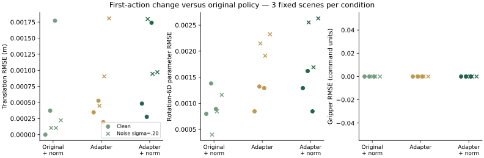

同一份观测，
是否产生同一个动作？
先量化动作重复性，再解释表征干预。两个独立进程、6份固定输入、54个完整生成块；本轮没有执行闭环轨迹。
已完成，来源与输入核验通过
单纯重复原LayerNorm，也使一份输入的实际首动作位置分量最多变化 4.203 毫米。它并非动作层面的恒等操作；这项变化在重复请求中稳定复现。仍不能据此断言它导致此前闭环成功率变化。
更新于 2026-09-21 22:30:43 CDT。上一轮80次闭环主要评测已全部完成，适配器后再归一化没有显示明确净收益。
冻结方案
使用此前清单的前三个场景400000、400001、400002，不按成功或失败选择。保持原来的十选一指令随机数消耗，逐一核对原初始主相机图像、EEF状态与指令。采集阶段未执行任何机器人动作；原控制循环在该阶段打印的失败计数不属于策略评测。
每个场景保存干净及 σ=0.20 主相机噪声请求，包含原生三相机PNG、完整提示词和状态。调用原ModelClient.step的实际序列化路径，核对PNG解码逐像素一致。每次固定请求前重置动作缓冲区，保留原模型、BF16、10次去噪、随机种子42及原缓存设置，关闭编译。
| 进程 | 固定顺序 | 生成块数 |
|---|---|---|
| A | 原策略：6份请求×2次 | 12 |
| B（重新加载） | 原策略6份×1次，再归一化／适配器／适配器再归一化各6份×2次 | 42 |
只读记录完整原始生成块，以及经过原策略边界处理的实际首动作，分别比较，不能把未执行的生成块当作完整控制轨迹。
重复性与干预差异
| 比较 | 原始动作块完全相同 | 块最大绝对差 | 实际首动作完全相同 | 首动作最大绝对差 |
|---|---|---|---|---|
| 原策略：同进程重复 | 6/6 | 0 | 6/6 | 0 |
| 原策略：重启 vs A首次 | 6/6 | 0 | 6/6 | 0 |
| 原策略：重启 vs A第二次 | 6/6 | 0 | 6/6 | 0 |
| 原策略再归一化：重复 | 6/6 | 0 | 6/6 | 0 |
| 适配器：重复 | 6/6 | 0 | 6/6 | 0 |
| 适配器再归一化：重复 | 6/6 | 0 | 6/6 | 0 |
实际首动作的位置变化
| 干预 | 输入 | 3个场景的平均RMSE（毫米） | 最大坐标变化（毫米） |
|---|---|---|---|
| 原策略再归一化 | 干净 | 0.715 | 4.203 |
| 原策略再归一化 | 噪声 | 0.144 | 0.484 |
| 适配器 | 干净 | 0.356 | 0.950 |
| 适配器 | 噪声 | 1.054 | 4.203 |
| 适配器再归一化 | 干净 | 0.833 | 4.203 |
| 适配器再归一化 | 噪声 | 1.237 | 4.203 |
冻结干预相对原策略：相同输入
| 干预 | 次数 | 动作块完全相同 | 首动作完全相同 | 首动作最大绝对差 |
|---|---|---|---|---|
| 原策略再归一化 | 重复0 | 0/6 | 0/6 | 0.0042031407 |
| 原策略再归一化 | 重复1 | 0/6 | 0/6 | 0.0042031407 |
| 适配器 | 重复0 | 0/6 | 0/6 | 0.0042031407 |
| 适配器 | 重复1 | 0/6 | 0/6 | 0.0042031407 |
| 适配器再归一化 | 重复0 | 0/6 | 0/6 | 0.0042031407 |
| 适配器再归一化 | 重复1 | 0/6 | 0/6 | 0.0042031407 |

每个点是一份固定初始输入；圆点为干净，叉号为噪声。图中展示预定第一次干预输出；第二次输出也完整保留并比较。位置单位为米，rot6d误差不是角度。动作变化既不等于任务收益，也不等于控制退化。
实际保存的输入
干净初始输入
主相机噪声 σ=0.20
这些结果能回答什么
本实验分离同输入推理波动与表征干预引起的动作变化。它仅覆盖3个复用场景的初始观测，不能验证接触阶段、相机视角泛化、任务成功率或RAE优于VAE。
下一步在输入重放有效后，固定原策略在相同3个场景的干净／噪声条件下各重放两次，最多12条闭环，记录第一处观测或动作分歧。完整轨迹记录另行冻结后启动；若重复性不稳定，先定位原因，再考虑下一项表征改进。
复现记录
执行修正：首次调用后发现原生预处理会修改请求字典，完整性检查及时停止。改为每次从同一份JSON重新解码，复现原WebSocket语义。一次后续加载因测试门槛检查被主动终止，未生成动作。两次记录都已保留；最终比较不混入这些工程尝试。详见请求隔离修正说明。
protocol.md · source-freeze.json · scenes.json · cpu-checks.json · capture-summary.json · summary.json · request-isolation-amendment.md · supplemental-audit.json
冻结脚本与场景清单 · 全部请求与逐块动作数据 · 科学图PNG

公开策略与小适配器沿用已有权重与来源记录。推理权重没有重新训练。